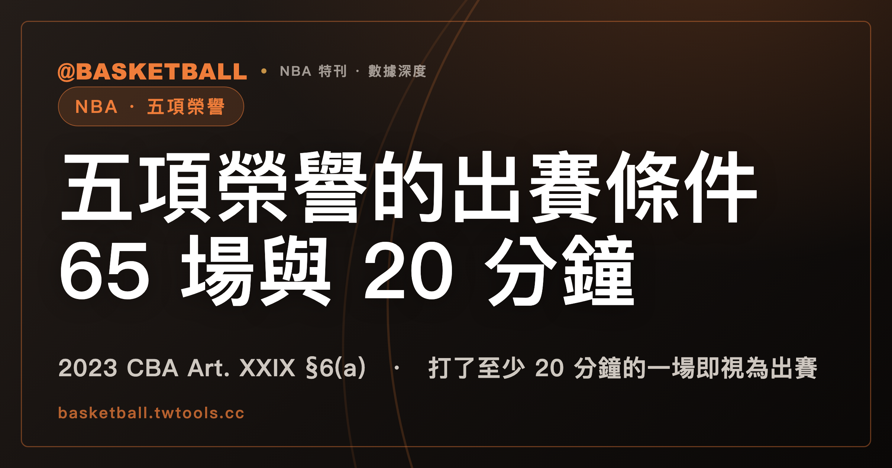

2023 NBA CBA 五項榮譽的出賽條件：打了至少 20 分鐘的一場即視為出賽，場數條件兩款至少滿足一款
依 2023 NBA CBA Article XXIX Section 6(a)，NBA Most Valuable Player、Defensive Player of the Year、Most Improved Player、All-NBA Team、All-Defensive Team 五項榮譽，球員要在該 Season 滿足場數條件才有資格：played in 至少 65 場 Regular Season games，或另一款的 62 場加 season-ending injury 與傷前出賽率 85%。未達標的球員，條文另設兩條途徑，仍可能被視為具資格。同一節寫明一場怎樣算 played in：打了至少 20 分鐘的一場即視為出賽，每個 Season 另有至多 2 場，15 分鐘以上不滿 20 分鐘也視為出賽。

新手村｜CBA 入門・五項榮譽的出賽條件
本文依據 2023 NBA Collective Bargaining Agreement（本文簡稱 2023 CBA）的全文文字檔，取得日是 2026 年 10 月 4 日。讀的是 Article XXIX Section 6，節標題是 Games Played Requirement for Certain League Honors。本文只談 NBA，FIBA 規則不適用。
球迷說的「65 場門檻」是中文慣稱，不是條文用語。§6(a) 的小標是 Award Eligibility，內容是五項個人榮譽的出賽場數條件，外加「一場怎樣算出賽」的定義。讀完這篇，你可以拿一份假設的出賽紀錄，照條文的字面算出它有沒有達到 §6(a) 的場數條件。
五項榮譽由 2023 CBA §6(a) 點名，Art. I §1(cc) 的八項裡有三項沒有列入
§6(a) 的句型是「除非滿足，否則無資格」。條文寫的是 No player shall be eligible for … honors for a Season unless the player has satisfied at least one of the following criteria。被這個句型管到的有五項：NBA Most Valuable Player、NBA Defensive Player of the Year、NBA Most Improved Player、All-NBA Team（First, Second, or Third）、NBA All-Defensive Team（First or Second）。條文把這五項合稱 Applicable Generally Recognized League Honors，本文的「五項榮譽」就是 §6(a) 首句點名的這份清單。
Art. I §1(cc) 另外定義了 Generally Recognized League Honors，共八項。兩份清單並排如下：
| 榮譽（條文原名） | §6(a) 首句 | Art. I §1(cc) 的八項 |
|---|---|---|
| NBA Most Valuable Player | 列入 | 列入 |
| NBA Defensive Player of the Year | 列入 | 列入 |
| NBA Most Improved Player | 列入 | 列入 |
| All-NBA Team（First, Second, or Third） | 列入 | 列入 |
| NBA All-Defensive Team（First or Second） | 列入 | 列入 |
| NBA Finals Most Valuable Player | 未列 | 列入 |
| NBA Sixth Man Award | 未列 | 列入 |
| All-Star Team Selection | 未列 | 列入 |
新人王（Rookie of the Year）兩份清單都沒有列。§6(a) 的場數條件管的是首句那五項。
兩款 Regular Season 場數條件並列，2023 CBA §6(a) 的球員至少要滿足一款
條文把兩款條件合稱 Award Eligibility Criteria，款與款之間用 or 連接：
| 款 | 條件（2023 CBA Art. XXIX §6(a)） |
|---|---|
| (1) | 該 Season played in 至少 65 場 Regular Season games |
| (2) | 同時滿足 (A)(B)(C) 三項：(A) played in 至少 62 場 Regular Season games；(B) suffered a "season-ending injury"（定義見後面一節）；(C) played in 傷前所屬 Team 已賽 Regular Season games 的至少 85% |
款 (2) 的三項是 "(A) …, (B) …, and (C) …" 的串列，and 連接的是三項，三項同時成立才算滿足這一款。(C) 的分母是球員受傷之前，他所屬的 Team 已經賽完的 Regular Season games。
球員滿足至少一款，首句的「除非」條件就成立。兩款都沒有滿足，§6(a) 的字面結果是無資格；條文為這種情況另留的兩條途徑，見後面「未達標的球員」一節。
打了至少 20 分鐘的一場在 2023 CBA §6 內即視為出賽，15 分鐘以上不滿 20 分鐘每個 Season 至多 2 場
兩款裡的 played in 看起來像一般用語，但 §6(a)(i) 為它另寫了定義。(a)(i) 的導語說明，下列規定適用於 Section 6，而且 notwithstanding anything to the contrary in this Agreement，也就是不受本協議其他相反規定影響。其中 (B) 款寫一場怎樣算 played in a Regular Season game：
| 球員在那一場的上場時間 | 2023 CBA Art. XXIX §6(a)(i)(B) |
|---|---|
| 至少 20 分鐘 | 視為 played in 那一場 |
| 至少 15 分鐘且不滿 20 分鐘 | 每個 Season 至多 2 場，也視為 played in |
20 分鐘那一句用的連接詞是 if（shall be considered … if he played at least twenty (20) minutes），15 分鐘的規定則掛在 provided that 之後。條文的 played in，在 §6 內以這個定義為準。
數的是哪一類比賽？Art. I §1(aaa) 把 Regular Season 定義為某個 Season 中 regularly scheduled 的競賽期間，括號寫明 as opposed to Exhibition, Play-In, or playoff。Art. XXIX §8(c) 另外寫每個 Season 有 6 場 Play-In Games，排在 Regular Season 結束之後、季後賽第一輪之前。這兩處都沒有提到 §6，把它們接到 §6 是本文的讀法：§6 數的 Regular Season games 不含 Exhibition、Play-In 與 playoff。
分鐘怎麼計時、加時賽的分鐘算不算進 20 分鐘，§6(a) 到 (c) 都沒有寫。
打了不滿 20 分鐘的一場算不算出賽？每個 Season 至多 2 場的額度以外，本文讀成不計入
反方的理由：20 分鐘那句用的是 if，不是 only if，§6(a) 到 (c) 也沒有一句直接寫「不滿 20 分鐘的一場不算」。
正方的理由：15 分鐘的但書讓每個 Season 至多 2 場、打了至少 15 分鐘且不滿 20 分鐘的比賽也視為 played in。如果不滿 20 分鐘的比賽本來就算出賽，這條但書就沒有存在的理由。§6(a) 到 (c) 替 played in 下定義的是 (a)(i)(B) 這一處，它的兩句話沒有把第 3 場以後的 15 到 20 分鐘、以及不滿 15 分鐘的比賽算進去。
本文的讀法是：除了但書允許的至多 2 場之外，不滿 20 分鐘的比賽不計入。這個讀法來自但書存在的理由，不是條文明寫，把握度中等，讀者可以不同意。
誰判斷 season-ending injury？2023 CBA 交給 NBA 與球員工會共同選定的醫師
§6(a)(i)(A) 給 season-ending injury 下了定義。判斷的人，是 a physician jointly selected by the NBA and Players Association，也就是 NBA 與球員工會共同選定的醫師。判斷的內容，是這項傷病在醫師的意見中，使球員 substantially more likely than not 無法打到傷病發生日之後的那個 May 31。
2023 CBA 還有另一個條款用到同一句 substantially more likely than not：Art. VII §6(c) 的 Disabled Player Exception。那裡的醫師是 NBA 指定的（a physician designated by the NBA），期限是隨後的 6 月 15 日。兩處各有各的條文，醫師與期限各寫各的。Art. VII 那一側見本站的傷病球員例外入門。
未達標的球員，2023 CBA 還留了兩條途徑，讓他仍可能被視為具資格
§6(a)(ii) 接著寫：未滿足 Award Eligibility Criteria 的球員，如果在 Award Eligibility Grievance 或 Extraordinary Circumstances Challenge 勝訴，may nonetheless be deemed eligible。兩條途徑各有名稱，也各有專節：Award Eligibility Grievance 在 §6(b)，Extraordinary Circumstances Challenge 在 §6(c)。同一個 Season 兩條不得都提。條文用的是 may，勝訴之後可能被視為具資格。
Award Eligibility Grievance 並不是任何未達標的球員都能提。§6(b)(iv) 寫：球員在該 Season 獲頒其中一項榮譽，可能影響他是否具備（或可能具備）下列三種簽約資格時，才能提 Award Eligibility Grievance：
- Art. II §7(a)(i)：簽 Contract 或 Extension，首年 Maximum Annual Salary 超過 Salary Cap 的 25%，依據是 Higher Max Criteria；
- Art. II §7(a)(ii)：簽 Designated Veteran Player Contract；
- Art. II §7(e)：簽 Designated Veteran Player Extension。
與 Higher Max Criteria 的邊界：Higher Max Criteria 看三項榮譽，§6(a) 看五項
Higher Max Criteria 在 Art. II §7(a)(i)，屬於 Maximum Annual Salary 的條款，只有兩款：(A) 款是在緊接前一個 Season，或緊接前三個 Season 中的兩個 Season，入選 All-NBA 第一、二或三隊，或獲選 Defensive Player of the Year；(B) 款是在緊接前三個 Season 中的任何一個 Season 獲選 NBA MVP。兩份清單的差異如下：
| 榮譽 | §6(a) 的五項 | Art. II §7(a)(i) 的 Higher Max Criteria |
|---|---|---|
| NBA Most Valuable Player | 列入 | (B) 款 |
| Defensive Player of the Year | 列入 | (A) 款 |
| All-NBA Team（第一、二或三隊） | 列入 | (A) 款 |
| NBA Most Improved Player | 列入 | 未列 |
| NBA All-Defensive Team（First or Second） | 列入 | 未列 |
§6 明文引用 Art. II §7 的地方，只在上一節的 (b)(iv)。兩個條款各自成立，本文不把它們接成同一條規則。Higher Max Criteria 那一側見本站的Maximum Annual Salary 與 Higher Max Criteria。
三份假設的出賽紀錄，套進 §6(a) 的字面條文，結果各是什麼？
以下三份紀錄都是練習用的假設，不是任何真實球員。三份都是同一個 Season 的 Regular Season 紀錄。
假設甲：63 場打了至少 20 分鐘，另有 2 場分別打了 16 分鐘和 18 分鐘。
63 場各算 1 場。另外 2 場在 15 分鐘以上、不滿 20 分鐘的範圍內，但書的額度是每個 Season 至多 2 場，剛好用完。63 加 2 等於 65，滿足款 (1)。
假設乙：64 場都打了至少 20 分鐘，球季中受傷，並假設 NBA 與球員工會共同選定的醫師判定為 season-ending injury。傷前乙所屬 Team 已賽 80 場 Regular Season games，乙在傷前出賽 64 場。
款 (1) 要 65 場，64 場差 1 場。款 (2) 的 (A) 64 場超過 62 場，(B) 假設成立，(C) 要算 64 除以 80，等於 80%，低於 85%。三項裡 (C) 沒有達成，款 (2) 也不滿足。兩款都沒有滿足，§6(a) 的字面結果是未達標，剩下的是 (a)(ii) 的兩條途徑。
假設把同一份紀錄的傷前 Team 已賽場數改成 72 場，64 除以 72 約等於 88.9%，高於 85%，(C) 成立，款 (2) 三項同時滿足。
假設丙：62 場打了至少 20 分鐘，另有 3 場分別打了 17、18、19 分鐘，沒有 season-ending injury。
62 場各算 1 場。3 場 15 分鐘以上不滿 20 分鐘的比賽裡，但書至多讓 2 場視為出賽，第 3 場在 (a)(i)(B) 的兩句裡沒有被算進去，這一步是前面「不計入」那一節的讀法。62 加 2 等於 64，不到 65，款 (1) 沒有滿足；款 (2) 需要 season-ending injury，這份紀錄沒有，款 (2) 也不滿足。
自己的紀錄也可以照三步判斷：先把每一場按上場時間分成「至少 20 分鐘」「15 分鐘以上不滿 20 分鐘（至多算 2 場）」和其他；再把算得進來的場數跟 65 比；不到 65 時，再看有沒有 season-ending injury，並比 62 場與傷前 85%。拿球員上過場的場次數直接去跟 65 或 62 比，會漏掉 (a)(i)(B) 的分鐘定義這一層。
範圍與版本：本文只讀 2023 CBA 的 Section 6 與四處相關條文
讀的條文是 Art. XXIX §6、Art. I §1(aaa) 與 §1(cc)、Art. II §7、Art. VII §6(c)、Art. XXIX §8(c)，全部出自 2026 年 10 月 4 日取得的 2023 CBA 全文文字檔。CBA 會隨協議修訂；2023 CBA 之後有沒有修訂，本文取得的檔案看不出來。上面每一條規則都以 2023 CBA 為限，之後以官方公布的新版本為準。
新人王一項，本機全文文字檔搜尋 Rookie of the Year 得 0 筆；本文只陳述它不在兩份清單裡。Award Eligibility Grievance 與 Extraordinary Circumstances Challenge 的程序、期限與舉證，本文沒有展開。
「65 場門檻」「出賽」「上場」「賽季報銷」是中文慣稱，不是規則書用語；「賽季報銷」與條文自己定義的 season-ending injury 不當作同一個詞使用。Applicable Generally Recognized League Honors、Award Eligibility Criteria、season-ending injury 是 CBA 自己定義的詞，本文保留英文原文。
常見問題
2023 CBA 的五項榮譽，Regular Season 出賽場數要多少？
依 2023 NBA CBA Art. XXIX §6(a)，球員在該 Season 要滿足兩款至少一款：played in 至少 65 場 Regular Season games；或 (A) 至少 62 場、(B) season-ending injury、(C) 傷前所屬 Team 已賽 Regular Season games 的至少 85%，三項同時成立。細節見上文「兩款 Regular Season 場數條件」一節。
2023 CBA 的 Section 6 裡，打了 17 分鐘的一場算出賽嗎？
依 2023 NBA CBA Art. XXIX §6(a)(i)(B)，打了至少 15 分鐘且不滿 20 分鐘的比賽，每個 Season 至多 2 場視為 played in。超過 2 場的部分，本文讀成不計入，理由見上文「不滿 20 分鐘」那一節。
Play-In 和季後賽的場次，算進 2023 CBA §6 的 65 場嗎？
2023 NBA CBA Art. I §1(aaa) 把 Regular Season 定義為 regularly scheduled 的競賽期間，括號排除 Exhibition、Play-In、playoff。§6 沒有重寫這個括號，本文的讀法是 §6(a) 數的 Regular Season games 不含這三類。細節見上文「數的是哪一類比賽」那一段。
場數不夠的球員，2023 CBA 還有辦法被視為具資格嗎？
依 2023 NBA CBA Art. XXIX §6(a)(ii)，未滿足 Award Eligibility Criteria 的球員在 Award Eligibility Grievance 或 Extraordinary Circumstances Challenge 勝訴時，may nonetheless be deemed eligible，同一個 Season 兩條不得都提。Award Eligibility Grievance 的提起資格限於 §6(b)(iv) 的三種簽約情境，程序不在本文範圍。
資料來源
- 2023 NBA Collective Bargaining Agreement（NBA 官方 PDF，文字檔取得日 2026 年 10 月 4 日）：2023 CBA 官方 PDF。本文用到 Article XXIX Section 6（Games Played Requirement for Certain League Honors）、Article I §1(aaa)、§1(cc)、Article II §7、Article VII §6(c)、Article XXIX §8(c)。